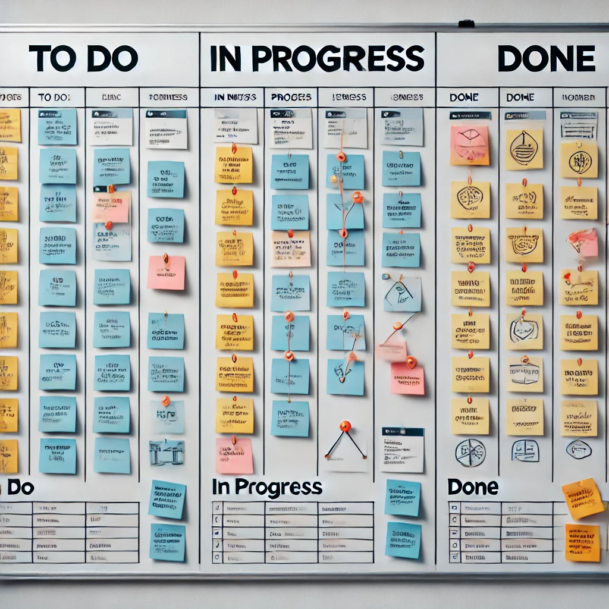
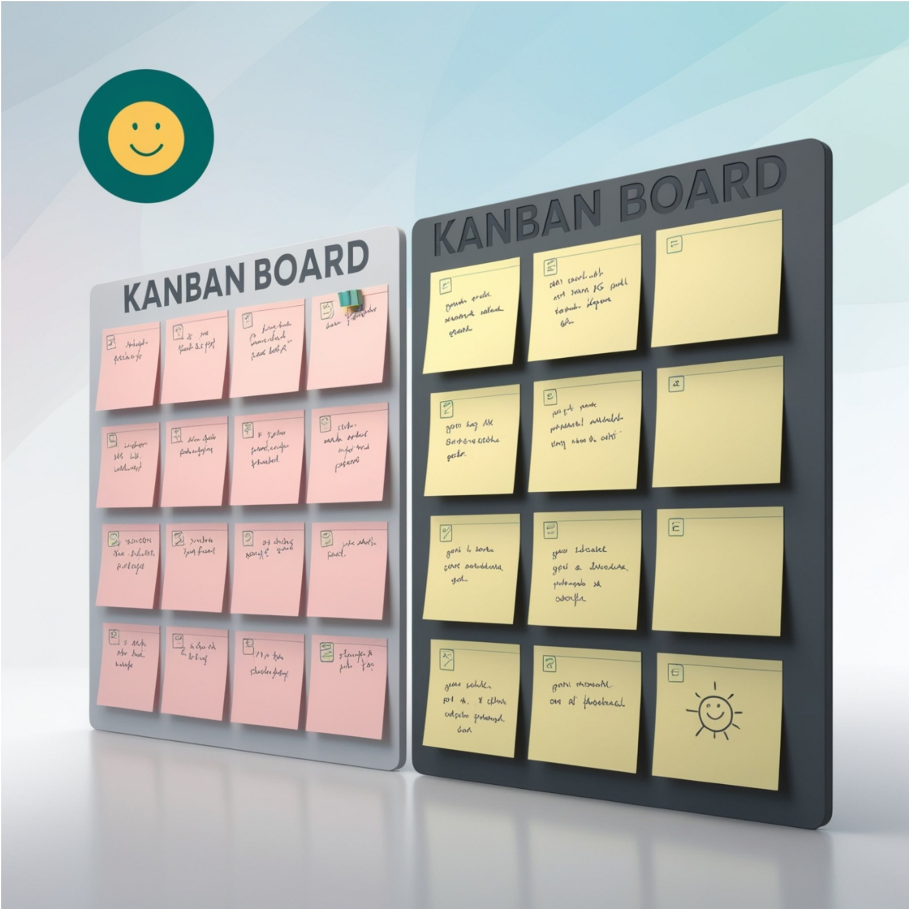
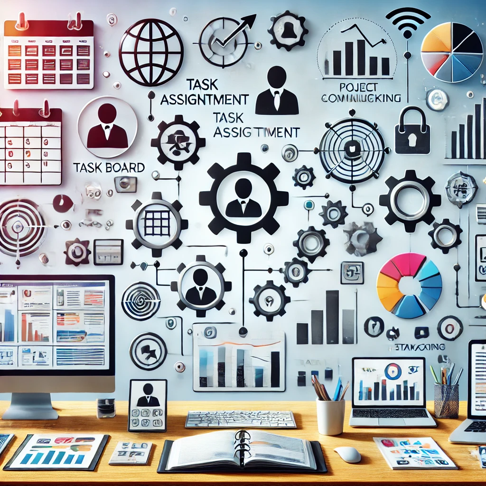
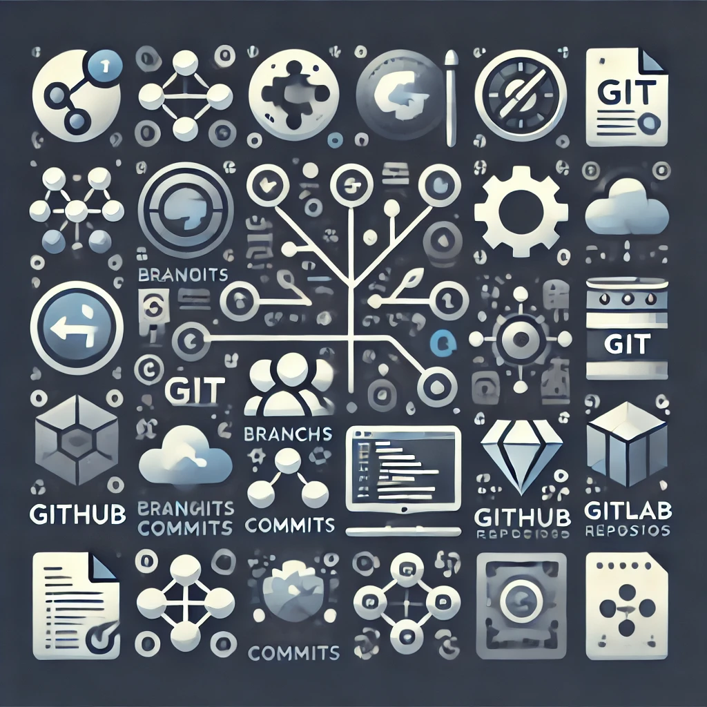
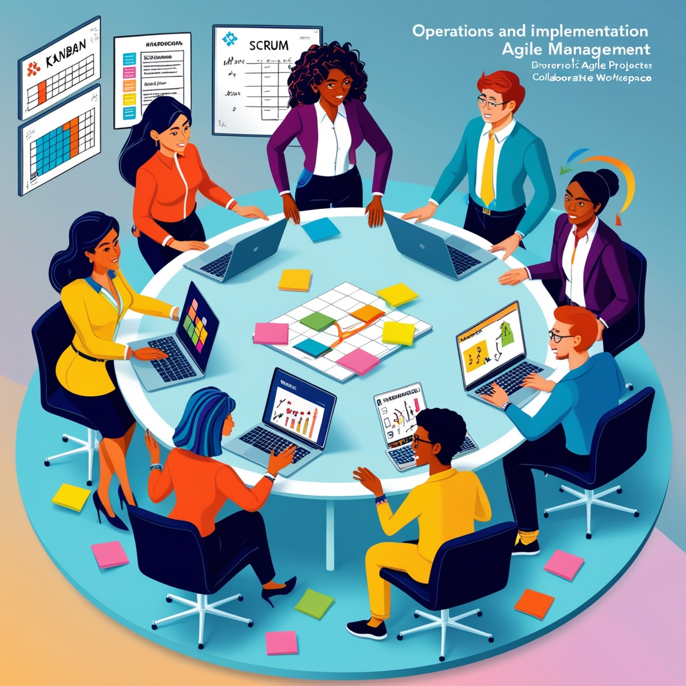
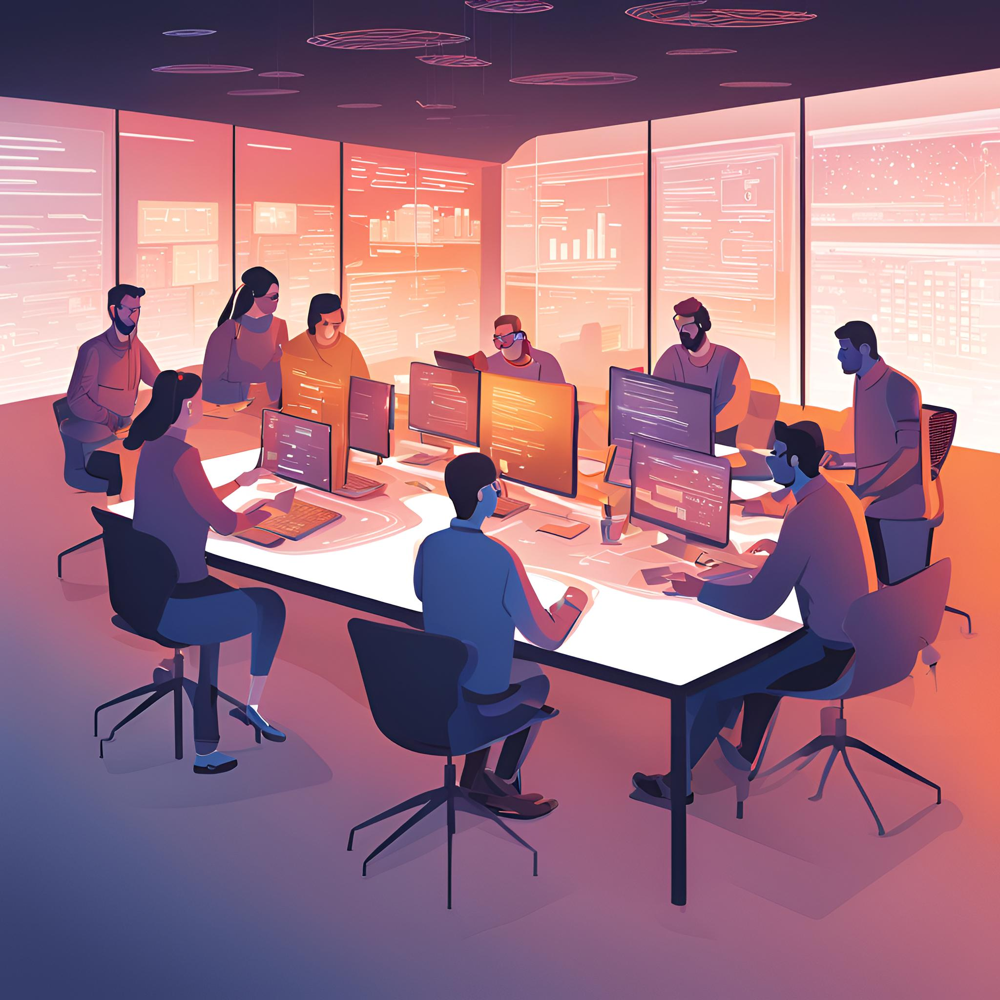

Ferramentas e Áreas de Aplicação
Scrum Board
O Scrum Board é uma ferramenta visual utilizada no framework Scrum para gerenciar o progresso de um projeto ágil. Ele ajuda a equipe a visualizar e organizar as tarefas de forma clara e eficiente. Normalmente, ele é dividido em colunas que representam as diferentes etapas do fluxo de trabalho, como:
- Backlog: Tarefas a serem feitas.
- Em Progresso: Tarefas que estão sendo trabalhadas.
- Concluído: Tarefas finalizadas.
As tarefas são representadas por cartões ou post-its que são movidos entre as colunas à medida que o trabalho avança. O Scrum Board promove a transparência, a colaboração e facilita as reuniões diárias (Daily Scrum) para que a equipe possa discutir o progresso e os obstáculos, usando ferramentas específicas de gerenciamento de projetos.
Kanban
Kanban é uma metodologia de gerenciamento de projetos e fluxo de trabalho que visa aumentar a eficiência e a flexibilidade das equipes. Originada na indústria japonesa, utiliza um sistema visual para representar o trabalho e seu progresso. Sua principal característica é o uso de cartões ("kanbans") que representam tarefas e que são organizados em um quadro dividido em colunas que representam diferentes etapas do processo. O Kanban também enfatiza princípios como:
- Visualização do trabalho: Facilita o entendimento do que está sendo feito e o que ainda precisa ser feito.
- Limitação de trabalho em progresso (WIP): Impede que a equipe trabalhe em muitas tarefas ao mesmo tempo, aumentando a eficiência.
- Fluxo contínuo: O objetivo é garantir que o trabalho flua suavemente através das etapas, minimizando interrupções. Essa abordagem é bastante flexível e pode ser aplicada em diversas áreas, não apenas em desenvolvimento de software.
Ferramentas de gestão de projetos são programas e plataformas que auxiliam equipes a planejar organizar, monitorar e executar projetos de maneira eficaz. Elas simplificam o acompanhamento das tarefas, a comunicação entre os membros e o cumprimento dos prazos estabelecidos. Além disso, essas ferramentas disponibilizam funcionalidades para gerenciar recursos, identificar possíveis riscos e assegurar que os objetivos do projeto sejam atingidos dentro do cronograma e orçamento previstos.
Principais funcionalidades das ferramentas de gestão de projetos
- Planejamento de tarefas: Dividir o projeto em fases e designar atividades com prazos definidos.
- Acompanhamento do progresso: Monitorar o andamento das tarefas e identificar possíveis atrasos ou gargalos.
- Colaboração em equipe: Facilitar a interação e o compartilhamento de informações entre os integrantes da equipe.
- Gerenciamento de recursos: Distribuir e controlar os recursos humanos, financeiros e materiais necessários para o projeto.
- Relatórios e métricas: Gerar análises e relatórios para avaliar o desempenho e a evolução do projeto.
- Automação de processos: Automatizar tarefas repetitivas, reduzindo o trabalho manual identificando possíveis pontos falhos durante o processo de desenvolvimento do trabalho.

Propósito:Voltado para projetos de desenvolvimento de software e equipes que utilizam metodologias ágeis como Scrum e Kanban.
Funcionalidades
- Gerenciamento de tarefas: Facilita a criação e acompanhamento detalhado de issues, incluindo tarefas, bugs e histórias de usuário.
- Metodologias ágeis: Oferece suporte a Scrum e Kanban, com quadros visuais, sprints e gerenciamento de backlog.
- Relatórios e métricas: Gera relatórios como gráficos de burndown, velocity e controle de versões.
- Automatização de processos: Configurações automáticas para otimizar fluxos de trabalho.
Asana
Focado na gestão de projetos e tarefas, com forte ênfase em colaboração e organização do fluxo de trabalho.
Funcionalidades
- Gerenciamento de tarefas e subtarefas: Permite dividir projetos em tarefas menores, adicionar responsáveis, prazos e etiquetas.
- Visualizações diversificadas: Oferece múltiplas maneiras de visualizar o projeto, como listas, cronogramas (Timeline) e quadros Kanban.
- Dependências e prioridades: Dá a possibilidade de definir relações de dependência entre tarefas e ajustar prioridades.
- Relatórios de progresso: Monitora e gera relatórios detalhados sobre o andamento dos projetos, com gráficos e painéis.
- Automação: Automatiza tarefas repetitivas e otimiza processos de fluxo de trabalho.
Resumindo:
- Jira: Ferramenta poderosa e técnica, ideal para equipes ágeis de desenvolvimento de software.
- Asana: Oferece flexibilidade e funcionalidades avançadas, sendo adequada para equipes de diferentes setores e níveis de complexidade.
Ferramentas de versionamento são softwares que permitem controlar e gerenciar as diferentes versões de um código-fonte, documento ou projeto ao longo do tempo. Elas rastreiam as mudanças feitas em arquivos, possibilitando que os usuários mantenham um histórico detalhado das alterações, revertam para versões anteriores e colaborem com outras pessoas de forma organizada, evitando conflitos e sobreposição de modificações.
Principais funcionalidades das ferramentas de versionamento
- Controle de versões: Acompanham todas as mudanças feitas em um arquivo ou conjunto de arquivos ao longo do tempo.
- Histórico de alterações: Mantêm um registro detalhado de quem fez cada modificação, quando foi feita e o que foi alterado.
- Comparação de versões: Permitem comparar diferentes versões de um arquivo para ver exatamente o que mudou.
- Colaboração: Facilita o trabalho simultâneo em um projeto por várias pessoas, resolvendo automaticamente ou alertando sobre conflitos entre mudanças.
- Reversão: Possibilita retornar a versões anteriores, caso um erro seja identificado em uma versão mais recente.
- Branching e merging: Permite a criação de ramificações independentes (branches) do projeto, que podem ser fundidas (merged) posteriormente.
Exemplos de ferramentas de versionamento
- Git: Uma das ferramentas de versionamento mais populares, amplamente utilizada no desenvolvimento de software.
- GitHub: Plataforma baseadas em Git, que permitem colaboração e hospedagem de repositórios.
- Subversion (SVN): Uma ferramenta mais antiga, ainda utilizada em alguns projetos.
- Mercurial: Outra opção popular de controle de versão distribuído. Essas ferramentas são especialmente importantes no desenvolvimento de software, mas também podem ser usadas em outros contextos onde o controle de versões de arquivos é necessário, como em trabalhos colaborativos com documentos ou design.


Ferramentas de colaboração são plataformas ou softwares projetados para facilitar
o trabalho conjunto entre equipes, permitindo que os membros colaborem de maneira
eficiente, independentemente de sua localização física. Essas ferramentas oferecem
recursos que ajudam na comunicação, no compartilhamento de informações e na
coordenação de atividades, tornando o trabalho em grupo mais organizado e produtivo.

Principais características das ferramentas de colaboração
- Comunicação em tempo real: Oferecem chats, videochamadas ou conferências, permitindo uma comunicação rápida e fluida.
- Compartilhamento de arquivos: Permitem o envio, armazenamento e acesso compartilhado a documentos, imagens e outros tipos de arquivos.
- Edição colaborativa: Ferramentas como editores de texto ou planilhas onde múltiplos usuários podem trabalhar simultaneamente.
- Gestão de tarefas: Recursos para atribuir, monitorar e acompanhar o progresso de tarefas dentro de um projeto.
- Integração com outras ferramentas: Conexão com plataformas de produtividade e gestão, como calendários, sistemas de armazenamento na nuvem e ferramentas de gestão de projetos.
Exemplos de ferramentas de colaboração
- Slack: Para comunicação instantânea e integração com diversas plataformas.
- Microsoft Teams: Para videoconferências, chat e colaboração em documentos do Office. Essas ferramentas são essenciais para aumentar a produtividade, especialmente em equipes remotas ou distribuídas, promovendo uma melhor sinergia entre os membros.
O Scrum, uma abordagem ágil para gestão de projetos, é amplamente conhecido por sua aplicação no desenvolvimento de software. No entanto, suas práticas e princípios podem ser adaptados para várias outras áreas e setores. A seguir, estão algumas das principais áreas de aplicação do Scrum:
Desenvolvimento de Software
- Gerenciamento de Projetos: Coordena a entrega contínua de funcionalidades e adaptações com base no feedback dos usuários e mudanças nos requisitos.
- Desenvolvimento Ágil: Facilita a implementação de ciclos curtos de desenvolvimento (sprints), permitindo entregas frequentes e ajustáveis.

Gestão de Produtos
- Lançamento de Produtos: Gerencia o desenvolvimento e melhorias com base no feedback do mercado e nas necessidades dos clientes.
- Inovação e Pesquisa: Permite experimentar novas ideias e ajustar o produto rapidamente com base nos resultados dos sprints.
Marketing
- Campanhas de Marketing: Planeja e executa campanhas em ciclos curtos, ajustando as estratégias com base no desempenho e feedback.
- Desenvolvimento de Conteúdo: Organiza a criação e publicação de conteúdos de forma iterativa, permitindo ajustes rápidos conforme a reação do público.
Gestão de Projetos de TI
- Implementação de Infraestrutura: Gerencia a implantação de novos sistemas e tecnologias em fases, ajustando conforme os requisitos e desafios surgem.
- Atualizações e Manutenção: Planeja e executa melhorias e atualizações em sistemas existentes de forma iterativa.
Educação
- Desenvolvimento Curricular: Cria e ajusta currículos e materiais educacionais com base no feedback dos alunos e nas necessidades educacionais.
- Gestão de Projetos Educacionais: Coordena projetos de inovação e melhorias em ambientes educacionais, adaptando-se a mudanças e desafios.
Recursos Humanos
- Gestão de Talentos: Desenvolve e ajusta programas de treinamento e desenvolvimento de funcionários de forma iterativa.
- Planejamento de Recrutamento: Organiza e melhora o processo de recrutamento e seleção com base em feedback e resultados de ciclos anteriores.
Saúde
- Gestão de Projetos Clínicos: Coordena a implementação de novas práticas, processos ou tecnologias em ambientes clínicos e hospitalares.
- Desenvolvimento de Produtos de Saúde: Gerencia a criação e melhoria de produtos e serviços de saúde com base nas necessidades dos pacientes e feedback da equipe médica.
Engenharia e Construção
- Gestão de Projetos de Construção: Planeja e executa projetos de construção em fases, ajustando conforme as necessidades e desafios surgem.
- Desenvolvimento de Produtos de Engenharia: Coordena o desenvolvimento de novos produtos e soluções técnicas de forma iterativa.
Serviços Financeiros
- Desenvolvimento de Produtos Financeiros: Gerencia o desenvolvimento e a melhoria de produtos financeiros, ajustando conforme as necessidades do mercado e feedback dos clientes.
- Gestão de Projetos: Coordena iniciativas e melhorias em processos financeiros de forma adaptativa e iterativa.